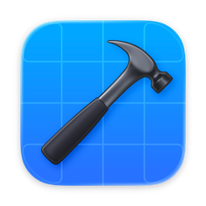

Swift
iOS developer · Product builder
I turn ideas into working products.
I’m Alimzhan. I design and build mobile, web, and AI products—from the first product decision to the shipped interface.
- Building
- Chatra
- Going deeper
- Swift & SwiftUI
- Based in
- Kazakhstan
Why I build
Ideas matter more when people can use them.
I wrote my first programs in 2025 at university. Soon after, coursework became late nights, weekend launches, hackathons, and a full education product used in real classrooms.
Today I’m moving deeper into Swift and SwiftUI. I care about the point where engineering, design, and product thinking become one clear experience.
Read the full journey3+hackathons across Kazakhstan
3connected Chatra platforms
Top 2Digital Urpaq finalist
Native toolkit
From language to interface.
Three tools I’m going deeper on to build software that feels at home on Apple platforms.
Safe by design.
Expressive syntax and modern safety for native Apple development.SwiftUI
One interface.
Every Apple platform.
Declarative UI with state, previews, and native behavior built in.
Xcode
From first line
to the device.
Code, previews, debugging, and testing inside one focused workspace.

Selected work
Products shaped by real constraints.
View every project01 / Flagship
Chatra
An education platform that brings classes, attendance, assignments, grades, and AI support into one connected product.
- Role
- Mobile lead · Product design
- System
- Flutter · FastAPI · Nuxt
- Outcome
- Used in university classrooms


02 / Product
Söyle
Accessible communication and guided practice for children and their families.
Explore Söyle03 / System
FORGE
A guided workspace that turns an unclear business need into a team-ready task.
Explore FORGEHow I work
Clarity is an engineering decision.
I use product thinking, interface design, and implementation constraints together—not as separate stages.
- 01
Find the real problem.
Reduce ambiguity to a useful first version and a clear measure of success.
Research · Scope · Product - 02
Make the path obvious.
Use hierarchy, language, and feedback so the interface explains itself.
Flows · Systems · Prototypes - 03
Build for the platform.
Treat native conventions, architecture, and performance as design tools.
Swift · APIs · Quality - 04
Use AI with intent.
Apply it where context helps people, with clear limits and human control.
LLM · Evaluation · Responsibility
Now
Going deeper, not wider.
Native iOS. Swift, SwiftUI, interaction design, and the details that make software feel at home on Apple platforms.
Connected products. Mobile clients, reliable APIs, role-based web tools, and the decisions that hold the system together.
University and experimentation. Turning coursework, hackathons, and AI exploration into software that can be tested in the real world.
Start a conversation
Have a useful problem?
I’m open to internships, product collaborations, hackathon teams, and focused freelance work.
Let’s talk